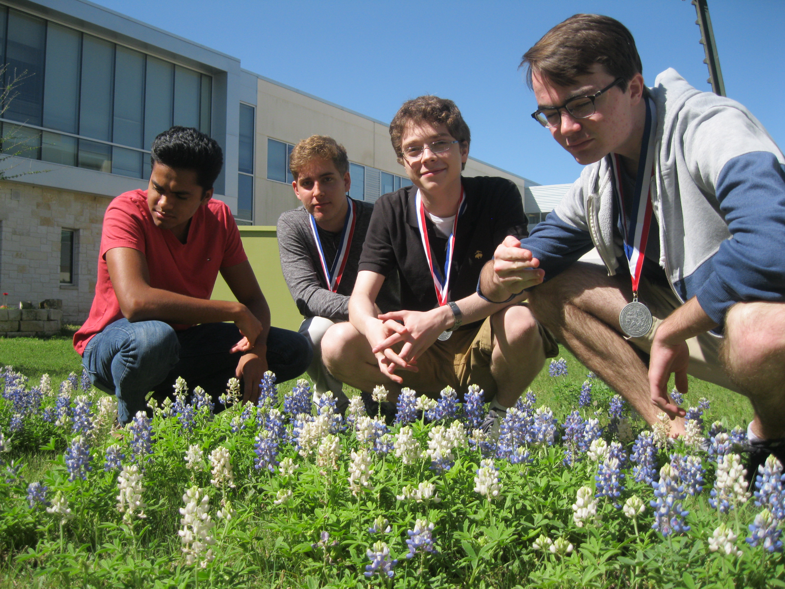

Hello World!
Welcome to the Cedar Ridge Computer Science Club Website! To learn about our club, join our club, practice for UIL Computer Science, or learn about Computer Science topics, use the Navigation Bar above.
Wrong Place?
Is this not what you were looking for? Well don't be so quick to leave. Joining the Computer Science Club is a great idea as it will help to advance and refine your Computer Science abilities and repertoire of knowledge. Furthermore, when you join the Computer Science Club, you are given the opportunity to show off your skills, compete against others, and - if you've got what it takes - bring home the gold for Cedar Ridge. Think about it. Sign-Up here.
Current Champs
Left to Right: Arvind Raghavan, Kai Fleischman, and Matthew Pabst